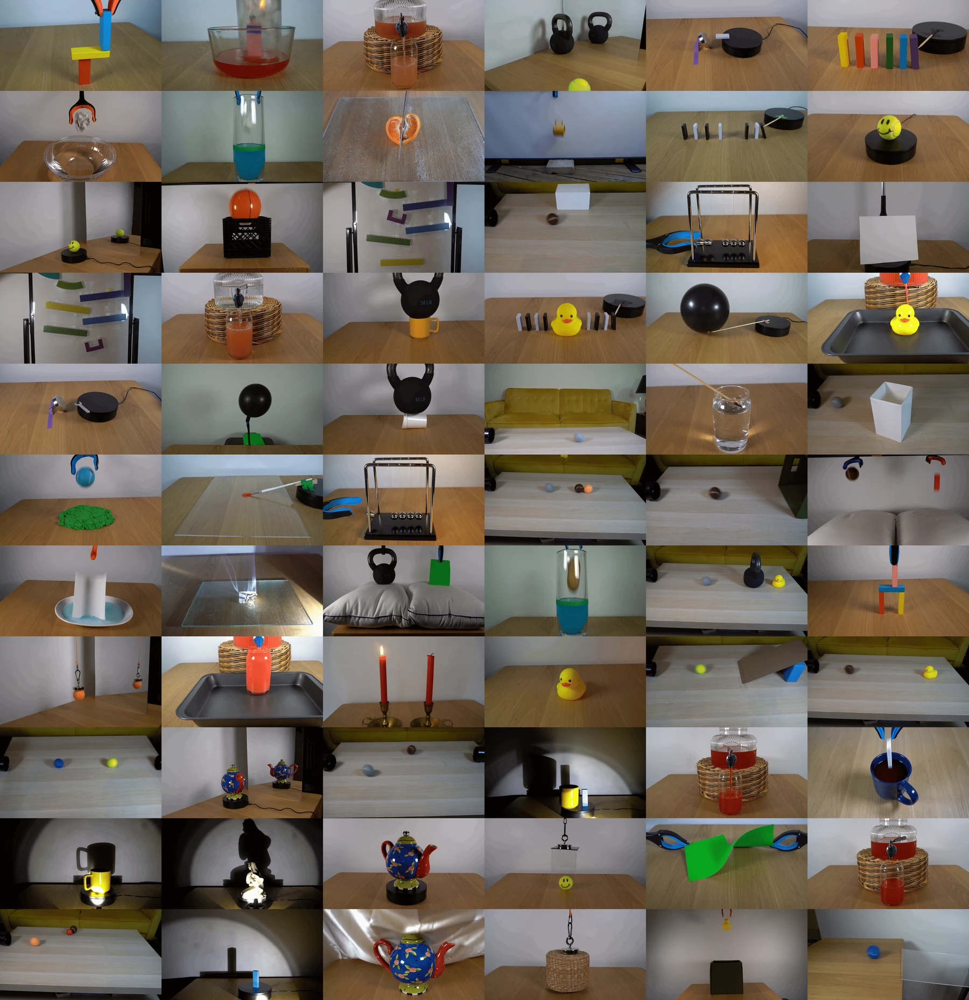
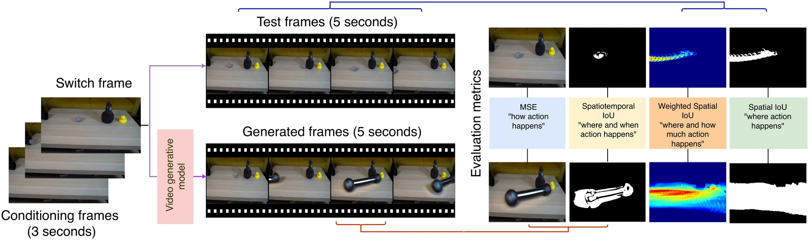

Physics-IQ: Do Generative Video Models Understand Physical Principles?
- PaperDo generative video models understand physical principles?
- AuthorsSaman Motamed, Laura Culp, Kevin Swersky, Priyank Jaini, Robert Geirhos
- FromGoogle DeepMind; INSAIT, Sofia University
- arXivarXiv:2501.09038 (cs.CV), January 2025
- LinksProject page · Code and data
Video models now make realistic videos. Do they learn the laws of physics along the way, or do they only predict pixels that look right? Physics-IQ tests this with real videos that can only be continued correctly by a model that understands the physics in them: solid mechanics, fluid dynamics, optics, thermodynamics and magnetism.


The task
Each video is 8 seconds long. A model sees the first 3 seconds, or only their last frame (the switch frame) if it generates video from one image, and predicts the next 5 seconds. It may also get a short text that describes the scene without telling what happens next. The switch frame is chosen by hand for each scenario: in a chain of dominoes, it is the moment the first domino has tipped but not yet reached the second.
The data
There are 396 videos: 66 scenarios, each filmed from three views (left, center, right) and twice, at 3840 × 2160 and 30 fps, with static cameras. The two takes are recorded in the same way, yet differ a little, through chaotic motion or small changes in friction. The paper calls this difference the physical variance: how closely two real recordings of the same event agree.
How it is scored
The prediction is compared with the real continuation through where things move. Four metrics: Spatial IoU (where motion happens), Spatiotemporal IoU (where and when), Weighted spatial IoU (where and how much) and MSE (how it happens, pixel by pixel). The Physics-IQ score combines them and is normalised so that the second real take scores 100: the best a prediction can reach.


What the paper found
The authors test eight models: Sora, Runway Gen 3, Pika 1.0, Lumiere, Stable Video Diffusion and VideoPoet, two of them both from one image and from several frames. All are far from the real takes: the best, VideoPoet from several frames, scores 29.5 out of 100. Models given several frames do better than the same models given one. Every model scores much higher on Spatial IoU than on the stricter metrics: they put motion in the right place more often than at the right time or in the right amount. Visual realism, measured by how often a multimodal model can tell a generated video from the real one, is unrelated to physical understanding. Some cases already work, such as paint smeared on glass or liquid poured on a rubber duck, while a ball falling into a crate or a knife cutting a tangerine fail.
Run it in Real2SimLab
In Real2SimLab the method writes a program rather than a video. An agent sees take 1's first 3 seconds and delivers
solution/run.py, which renders the next 5 seconds (150 frames at 30 fps); the program may not contain
video or image files. The Lab scores the video with Physics-IQ's own code at a pinned commit: its motion masks, its
four metrics against take 1, and its score. It also scores two reference points: the last visible frame held still,
and take 2. Read a score next to the still one: on a mostly still scene, frames where nothing moves count as matches,
so a still video already scores 53.4 on ball-and-block-fall (center view).
r2s env build r2s-blender-4.0 r2s-agent-codex-blender r2s bench build physicsiq --out tasks/piq --select ball-and-block-fall r2s eval --tasks tasks/piq --method codex=codex:image=r2s-agent-codex-blender --out runs/piq
More in the documentation.